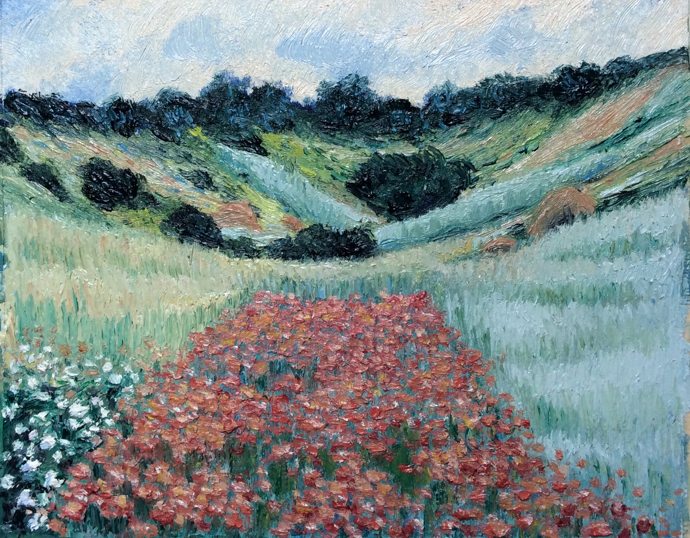
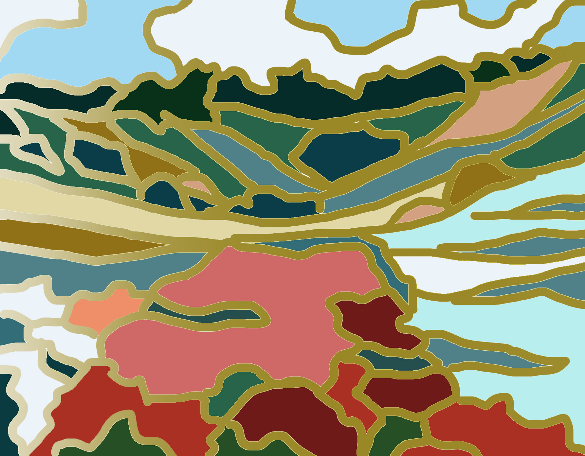

I am an artist with Engineering background. I currently work as a freelance. I make crafts (digital and traditional) and paintings. On a few occasions, I collaborated with the
Computatioanl Fabrication Group at CSAIL, MIT. Please consult the
Publications section to view some of this work.
I have hands-on experience with Arduino micro-controllers and programming. I am available for artistic or scientific collaboration in your projects.
I have studied painting with artists in Iran, Canada, Switzerland, and United States. I have experience working with oil paint, acrylic, watercolour, pencil, and charcoal. I accept portrait, figure and landscape painting or handcraft commissions.
Below are two of my works. Please consult the
Gallery to see more.
 